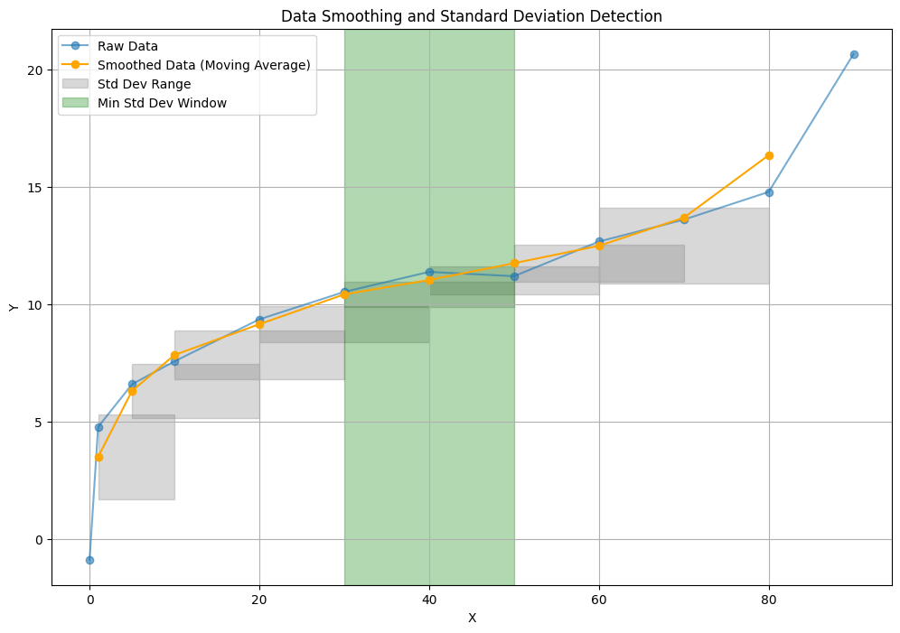

Analytics¶
This tutorial provides detailed, function-by-function guidance for the analytics module. Each section includes background, inputs and outputs, workflows, Python API examples, CLI examples, and practical notes.
Impedance over frequency¶
Physical background¶
Impedance varies with frequency due to inductive and capacitive effects. Frequency curves are used for comparing measurements and fitting the rho-f model.
Function overview¶
impedance_over_frequencymaps frequency to impedance magnitude.real_imag_over_frequencymaps frequency to real and imaginary components.
Inputs and outputs¶
| Function | Input | Output | Description |
|---|---|---|---|
impedance_over_frequency |
measurement id or list | dict | Map frequency to impedance magnitude. |
real_imag_over_frequency |
measurement id or list | dict | Map frequency to real and imaginary values. |
General workflow¶
- Ensure impedance items have
frequency_hzpopulated. - Query impedance or real/imag maps.
- Compare curves across measurements.
- Use the result for plotting or further modeling.
Python API examples¶
Scenario A: single measurement
from groundmeas.db import connect_db
from groundmeas.analytics import impedance_over_frequency
connect_db("groundmeas.db")
imp_map = impedance_over_frequency(1)
print(imp_map)
Scenario B: multiple measurements and real/imag
from groundmeas.db import connect_db
from groundmeas.analytics import real_imag_over_frequency
connect_db("groundmeas.db")
ri_map = real_imag_over_frequency([1, 2, 3])
print(ri_map[1])
CLI examples¶
Scenario A: single measurement
Scenario B: multiple measurements
Additional notes¶
- Missing
frequency_hzvalues are skipped. - If impedance values are stored as real and imag, ensure the
valuefield is populated or use the real/imag function. - Use the Plotly dashboard for quick visual comparison.
Distance profile reduction¶
Physical background¶
Fall-of-Potential tests measure impedance versus distance between the voltage probe and the earthing system. As the probe moves away, the measured impedance approaches the "remote earth" value. In practice the curve can flatten slowly, show a shallow maximum, or contain noise from soil inhomogeneity, coupling, and probe placement. Reduction algorithms estimate one characteristic impedance from the distance series.
Inverse extrapolation formula (1/Z method):
At infinite distance (1/d -> 0), 1/Z approaches the intercept b, so the extrapolated impedance is Z_infinity = 1/b.
Function overview¶
distance_profile_valuereduces a distance profile to one value using several algorithms.
Inputs and outputs¶
| Function | Input | Output | Description |
|---|---|---|---|
distance_profile_value |
measurement id, algorithm, window | dict | Return characteristic value and metadata. |
General workflow¶
- Verify impedance items have
measurement_distance_mandvalue. - If multiple frequencies exist, filter to a single frequency first.
- Choose a reduction algorithm that matches the test geometry and data quality.
- Run the reduction and inspect
result_distance_manddetails. - Compare with other algorithms if needed.
Algorithm behavior in groundmeas¶
Maximum¶
The maximum method returns the measured point with the highest impedance value. It assumes the survey captured the true maximum of the distance curve. If the maximum was missed, the result will be too low. This can be a conservative choice when the maximum is clearly identified.
Implementation details:
- Uses the single point with max(value).
- details.point includes the chosen point.
62 percent (IEEE 80)¶
IEEE Std 80 describes a colinear arrangement of electrode, current probe, and potential probe in homogeneous soil. Under those assumptions, the potential contributions cancel at 62% of the current-probe distance, so Z at 0.62 * D is the earthing impedance.
Implementation details:
- Requires distance_to_current_injection_m on the items.
- Target distance = 0.62 * distance_to_current_injection_m.
- Uses linear interpolation of the nearest distances (up to 3 points).
- result_distance_m equals the target distance; details.used_points lists the interpolation points.
Minimum gradient¶
The minimum-gradient method finds the location where the slope dZ/dd is closest to zero. The idea is that a flat section of the curve indicates the remote-earth region, so the impedance at that distance is the characteristic value.
Implementation details:
- Computes numerical gradients from the sorted distance series.
- Picks the point with the smallest absolute gradient.
- details.gradient records the gradient value at that point.
Minimum standard deviation¶
This method scans the curve with a fixed-size window and finds the segment with the smallest standard deviation. A stable segment indicates a flat, remote-earth region. The algorithm returns the maximum value within the best window to remain conservative while reducing sensitivity to single outliers.
Implementation details:
- Uses window points per segment.
- Picks the window with the lowest stddev(values).
- Returns the maximum value inside that window.
- details.window_points and details.stddev explain the chosen segment.
Inverse extrapolation (1/Z)¶
The inverse method fits a straight line to 1/Z versus 1/d and extrapolates to infinite distance. This is useful when the curve is still rising and remote earth is not clearly reached, but it can overestimate if the data range is short or noisy.
Implementation details:
- Fits a line to x = 1/d and y = 1/Z.
- Extrapolates to x = 0 to get y = b, then Z_infinity = 1/b.
- Returns result_distance_m = inf to indicate extrapolation.
- Requires non-zero distances and values.
Example curve (minimum standard deviation)¶

This plot shows the minimum standard deviation window used to select a stable region of the distance curve.
Choosing an algorithm¶
- Use 62% when the geometry matches IEEE 80 assumptions (colinear probes, homogeneous soil) and you have a reliable injection distance.
- Use minimum gradient when the curve flattens clearly and noise is low.
- Use minimum standard deviation when the curve is noisy but you expect a stable plateau; increase
windowto smooth more. - Use maximum when you intentionally search for and confirm the peak in the curve.
- Use inverse when remote earth is not fully reached; treat it as an extrapolation that can be conservative.
Python API examples¶
Scenario A: maximum method
from groundmeas.db import connect_db
from groundmeas.analytics import distance_profile_value
connect_db("groundmeas.db")
result = distance_profile_value(1, algorithm="maximum")
print(result["result_value"], result["result_distance_m"])
Scenario B: 62 percent method
from groundmeas.db import connect_db
from groundmeas.analytics import distance_profile_value
connect_db("groundmeas.db")
result = distance_profile_value(1, algorithm="62_percent")
print(result)
Scenario C: minimum standard deviation with a larger window
from groundmeas.db import connect_db
from groundmeas.analytics import distance_profile_value
connect_db("groundmeas.db")
result = distance_profile_value(1, algorithm="minimum_stddev", window=5)
print(result["result_value"], result["details"]["stddev"])
CLI examples¶
Scenario A: minimum gradient
Scenario B: inverse extrapolation
Additional notes¶
- The 62 percent method requires consistent
distance_to_current_injection_mvalues; mixed values trigger a warning and the first value is used. - Duplicate distances are deduplicated by choosing the point closest to linear interpolation between neighbors.
- For inverse, distances and values must be non-zero.
- Results depend on distance coverage; short or sparse curves can bias any reduction.
Rho-f model fitting¶
Physical background¶
The rho-f model links impedance to soil resistivity and frequency. It uses complex coefficients fitted from data.
Function overview¶
rho_f_modelfits k1 to k5 from impedance and soil resistivity data.
Inputs and outputs¶
| Function | Input | Output | Description |
|---|---|---|---|
rho_f_model |
measurement ids | tuple | Fit coefficients k1 to k5. |
General workflow¶
- Ensure impedance data and soil resistivity data overlap in frequency.
- Call the fit function with one or more measurements.
- Validate coefficients by plotting model curves.
Python API examples¶
Scenario A: single measurement
from groundmeas.db import connect_db
from groundmeas.analytics import rho_f_model
connect_db("groundmeas.db")
k1, k2, k3, k4, k5 = rho_f_model([1])
print(k1, k2, k3, k4, k5)
Scenario B: combined fit
from groundmeas.db import connect_db
from groundmeas.analytics import rho_f_model
connect_db("groundmeas.db")
coeffs = rho_f_model([1, 2, 3])
print(coeffs)
CLI examples¶
Scenario A: one measurement
Scenario B: multiple measurements
Additional notes¶
- The fit requires real and imag impedance values plus soil resistivity values.
- If frequencies do not overlap, the fit may fail or return poor coefficients.
- Use
plot-rho-f-modelto inspect the fit visually.
Voltage, touch voltage, and EPR¶
Physical background¶
Earth Potential Rise follows impedance and current.
Per-ampere convention (post 1.5.2). voltage_vt_epr returns
per-ampere quantities (units of V/A = Ω), not absolute volts. The
earthing impedance is reported under the key z_per_amp; the legacy
key epr is kept as a backwards-compatible alias carrying the same
impedance value. Callers must multiply by the actual earthing current
to obtain the EPR in volts:
summary = voltage_vt_epr(measurement_id, frequency=50.0)
epr_volts = summary["z_per_amp"] * I_earth_amps
This corrects an earlier unit-mislabel (voltage_vt_epr previously
stored the impedance under the epr key without flagging the unit
mismatch).
Function overview¶
voltage_vt_eprcomputes per-ampere earthing impedance and per-ampere touch-voltage summaries per measurement.
Inputs and outputs¶
| Function | Input | Output | Description |
|---|---|---|---|
voltage_vt_epr |
measurement id or list, frequency | dict | Per-ampere impedance (z_per_amp, alias epr) and per-ampere touch voltages. |
General workflow¶
- Ensure impedance and current items share the same frequency.
- Call the function with one or more measurements.
- Inspect EPR and voltage ranges.
Python API examples¶
Scenario A: single measurement
from groundmeas.db import connect_db
from groundmeas.analytics import voltage_vt_epr
connect_db("groundmeas.db")
summary = voltage_vt_epr(1, frequency=50.0)
print(summary)
Scenario B: multiple measurements
from groundmeas.db import connect_db
from groundmeas.analytics import voltage_vt_epr
connect_db("groundmeas.db")
summary = voltage_vt_epr([1, 2], frequency=50.0)
print(summary)
CLI examples¶
Scenario A: one measurement
Scenario B: multiple measurements
Additional notes¶
- If current or impedance data is missing, outputs will be incomplete.
- Use consistent units for current and impedance values.
Shield currents and split factor¶
Physical background¶
Earth fault current can split between cable shields and the local earthing system. The split factor quantifies that ratio.
Vector convention (post 1.5.2). calculate_split_factor returns
i.e. the ratio of the local (residual) earthing-current magnitude to the
total earth-fault current magnitude. All shield currents are summed as
complex phasors before the magnitude is taken, so phase-shifted shields
(typical for shielded MV cables) do not silently produce a negative
split factor — the earlier formulation 1 - |Σ shield| / |I_E| is fixed.
Callers that need the vector residual itself find it under the
local_earthing_current key in the result dict.
Function overview¶
shield_currents_for_locationlists shield current items for a location.calculate_split_factorcomputes the split factor and derived currents.
Inputs and outputs¶
| Function | Input | Output | Description |
|---|---|---|---|
shield_currents_for_location |
location id, frequency | list | Shield current items. |
calculate_split_factor |
earth fault item id, shield item ids | dict | Split factor and current components. |
General workflow¶
- Identify a location and available shield current items.
- Select the earth fault current item.
- Compute the split factor using selected shield currents.
Python API examples¶
Scenario A: list shield currents
from groundmeas.db import connect_db
from groundmeas.analytics import shield_currents_for_location
connect_db("groundmeas.db")
shield_items = shield_currents_for_location(location_id=1, frequency_hz=50.0)
print(shield_items)
Scenario B: compute split factor
from groundmeas.db import connect_db
from groundmeas.analytics import calculate_split_factor
connect_db("groundmeas.db")
result = calculate_split_factor(
earth_fault_current_id=100,
shield_current_ids=[201, 202],
)
print(result)
CLI examples¶
Scenario A: list shield currents
Scenario B: split factor
Additional notes¶
- Use consistent reference direction and frequency across shield current items.
- Mixed polar and rectangular values are supported, but avoid mixing units.
Value over distance mappings¶
Physical background¶
Not applicable. These functions provide distance-based mappings for plotting and QA.
Function overview¶
value_over_distancereturns a simple distance to value map.value_over_distance_detailedreturns distance, value, and frequency points.
Inputs and outputs¶
| Function | Input | Output | Description |
|---|---|---|---|
value_over_distance |
measurement id or list, type | dict | Distance to value map. |
value_over_distance_detailed |
measurement id or list, type | list or dict | Detailed points with frequency. |
General workflow¶
- Filter by measurement type (impedance, resistance, soil resistivity).
- Use the simple map for quick plots or checks.
- Use the detailed map when frequency separation matters.
Python API examples¶
Scenario A: simple map
from groundmeas.db import connect_db
from groundmeas.analytics import value_over_distance
connect_db("groundmeas.db")
dist_map = value_over_distance(1, measurement_type="earthing_impedance")
print(dist_map)
Scenario B: detailed map
from groundmeas.db import connect_db
from groundmeas.analytics import value_over_distance_detailed
connect_db("groundmeas.db")
points = value_over_distance_detailed([1, 2], measurement_type="earthing_impedance")
print(points[1][:3])
CLI examples¶
Scenario A: export and inspect
Scenario B: list items for a specific type
Additional notes¶
- There is no direct CLI command for these functions; use export or list-items for equivalent data.
- Missing
measurement_distance_mvalues are ignored.
Soil resistivity profiles¶
Physical background¶
Wenner and Schlumberger arrays estimate apparent resistivity from field measurements.
Wenner:
Schlumberger:
Function overview¶
soil_resistivity_profile_detailedreturns depth and spacing detail.soil_resistivity_profilereturns depth to resistivity map.soil_resistivity_curvereturns spacing to resistivity points.
Inputs and outputs¶
| Function | Input | Output | Description |
|---|---|---|---|
soil_resistivity_profile_detailed |
measurement id, method, options | list | Detailed depth and spacing points. |
soil_resistivity_profile |
measurement id, method, options | dict | Depth to resistivity map. |
soil_resistivity_curve |
measurement id, method, options | list | Spacing to resistivity points. |
General workflow¶
- Store soil resistivity or resistance values with spacing.
- Choose Wenner or Schlumberger method.
- Build a depth profile for QA.
- Use the spacing curve for inversion.
Python API examples¶
Scenario A: Wenner resistivity values
from groundmeas.db import connect_db
from groundmeas.analytics import soil_resistivity_profile
connect_db("groundmeas.db")
profile = soil_resistivity_profile(2, method="wenner")
print(profile)
Scenario B: Schlumberger resistance values
from groundmeas.db import connect_db
from groundmeas.analytics import soil_resistivity_profile_detailed
connect_db("groundmeas.db")
profile = soil_resistivity_profile_detailed(
measurement_id=3,
method="schlumberger",
value_kind="resistance",
ab_is_full=False,
mn_is_full=False,
)
print(profile[:3])
CLI examples¶
Scenario A: Wenner profile
Scenario B: Schlumberger profile with resistance values
Additional notes¶
- By default, Schlumberger spacing uses AB/2 and MN/2. Set
ab_is_fullormn_is_fullif you store full spacings. - If units are missing,
value_kind=autoassumes resistance.
Layered earth model and inversion¶
Physical background¶
Layered earth models approximate soil resistivity changes with depth. Apparent resistivity curves are simulated with digital filters or an integral engine.
Function overview¶
LayeredEarthModelvalidates layer resistivities and thicknesses.multilayer_soil_modelbuilds a layer table for reporting.layered_earth_forwardsimulates apparent resistivity for Wenner or Schlumberger.invert_layered_earthinverts spacing and apparent resistivity arrays.invert_soil_resistivity_layersinverts directly from stored soil items.
Inputs and outputs¶
| Function | Input | Output | Description |
|---|---|---|---|
LayeredEarthModel |
rho_layers, thicknesses_m |
object | Validated layered earth model. |
multilayer_soil_model |
rho_layers, thicknesses_m |
dict | Layer table and parameters. |
layered_earth_forward |
spacings, model params | list | Simulated apparent resistivity curve. |
invert_layered_earth |
spacings, observed rho, params | dict | Fitted layers and misfit stats. |
invert_soil_resistivity_layers |
measurement id, params | dict | Invert from stored soil survey. |
General workflow¶
- Choose 1 to 3 layers based on curve complexity.
- Set initial resistivities and thicknesses.
- Simulate the curve to sanity check the model.
- Run inversion and inspect misfit.
- Increase layer count only if needed.
Python API examples¶
Scenario A: forward simulation
from groundmeas.analytics import layered_earth_forward
spacings = [1.0, 2.0, 4.0, 8.0]
resistivities = [100.0, 30.0]
thicknesses = [2.0]
pred = layered_earth_forward(
spacings_m=spacings,
rho_layers=resistivities,
thicknesses_m=thicknesses,
method="wenner",
)
print(pred)
Scenario B: inversion from stored survey
from groundmeas.db import connect_db
from groundmeas.analytics import invert_soil_resistivity_layers
connect_db("groundmeas.db")
inv = invert_soil_resistivity_layers(
measurement_id=2,
method="wenner",
layers=2,
initial_rho=[120.0, 35.0],
initial_thicknesses=[2.5],
max_iter=40,
damping=0.1,
)
print(inv["rho_layers"], inv["thicknesses_m"], inv["misfit"])
CLI examples¶
Scenario A: simulate a model
gm-cli soil-model --rho 100 --rho 30 --thickness 2 \
--method wenner --spacing 1 --spacing 2 --spacing 4
Scenario B: invert a model
gm-cli soil-inversion 2 --layers 2 --method wenner \
--initial-rho 120 --initial-rho 35 \
--initial-thickness 2.5
Additional notes¶
- The filter forward engine assumes MN is small compared to AB for Schlumberger.
- Use
forward=integralwhen MN is not negligible (requires SciPy). - Inversion can be sensitive to initial guesses; start with 1 layer and add complexity gradually.
- Use
backend="mlx"on Apple hardware if MLX is installed for speed.
Convergence handling (1.5.2+)¶
invert_layered_earth runs a damped Gauss-Newton scheme in log-space and exits the
loop either when the change in RMSE drops below tol (converged) or when
max_iter is exhausted. Starting with 1.5.2, non-convergence is no longer silent:
- The result payload carries
"converged": Falseat the top level and inside"misfit"(which also records the final"rmse_log","mae_log","iterations"and the"tol"actually used). - A
UserWarningis emitted whose message contains"did not converge within max_iter=…"plus the final RMSE / tolerance pair. The warning is raised atstacklevel=2, so notebooks see it on the cell that called the inversion.
invert_soil_resistivity_layers forwards to invert_layered_earth and therefore
inherits the same contract. This behaviour closes the long-standing
"swallowed OptimizeResult.success=False" issue.
distance_profile_value duplicate-distance warning contract¶
distance_profile_value emits a UserWarning whenever it collapses two
measurement items that share an identical electrode distance. The warning
payload is intentionally rich so downstream notebooks can spot data-quality
problems immediately:
- The message lists up to five affected distances (
d_1, d_2, … m). - It carries the
measurement_idand themeasurement_typeof the offending profile so the user can jump straight to the item table. stacklevel=3ensures the reported source location is the caller's notebook cell rather than the analytics module itself.
Programmatic suppression is the usual warnings.catch_warnings(record=True)
pattern; do not silence the warning globally, because it doubles as a
data-quality red flag.